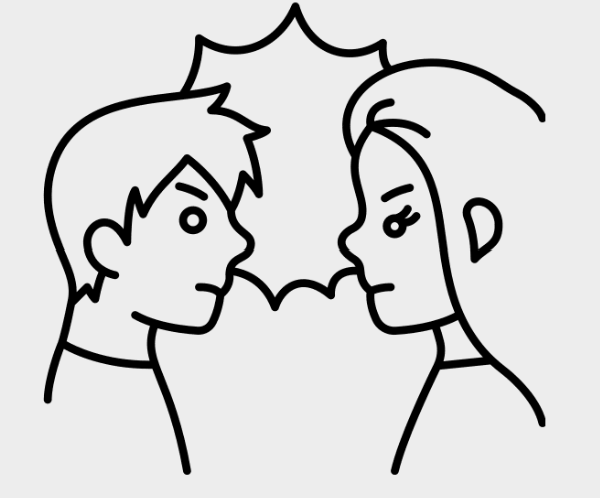

Unhealthy forms of Communication
Passive Aggression
Expressing negativity towards someone is subtle ways that aren’t direct. Allows one to ‘hide’ their true bad intentions in hopes of getting away with mistreating people. Even if the intention isn’t there, it is still a form of manipulation because there is a hope that the victim can be made to feel a certain way or receive a hidden message.
Aggression
Direct and forceful communication where the focus is not on the other person's feelings but rather 'winning' the confrontation and control. This can include:
Shouting
Not listening
Demanding
Escalating
Verbally Attacking
Scenario- Ying's Story
Read the following scenario and answer the questions below:
“These girls that are meant to be my friends are being really nasty to me. I feel like I can’t report it as it’s not as noticeable. They ‘bump into me’ with their handbags when they walk by. When I talk in class I see them roll their eyes and whisper to each other. On own clothes day I walked in and one of them said ‘I love your outfit’ before snickering to the others. I am also confused as they seem to think I’m hiding something or did something. They keep saying things like ‘Ying doesn’t tell anyone anything.” and ‘‘‘ You never know who will be listening’".
Question goes here
Answer 1
Answer 2
Answer 3
Answer 4
Comment goes here
Next
People who are often passive agressive know what they are doing. If they are confronted, it is unlikely they will change for the better but rather they will behave even more passive agressive. For example, spreading rumours, gossiping and targeting the victim more. Of course if the behaviour escalates, then more intervention will be necessary. What's good is that the victim can build their confidence to a point where the behaviour doesn't have to affect them. But while it still hurts, they shouldn't be expected to just ignore it. Seeking support is a vital and healthy step.
Scenario 2- Brian and Rachel
Rachel was feeling annoyed about Brian’s work in their project. She told him to meet her alone to talk about it. She started to almost shout at him. She blamed him for everything that went wrong, demanding him to answer her questions about what he’d been doing. When Brian apologised she kept going. She refused to take any responsibility when Brian suggested times he felt she was making the work more difficult. When Brian started doing deep breaths and tearing up she kept going. She kept going for an hour.

Reflective Questions
What does it show when Rachel keeps going even though Brian started to tear up?
Reveal
She lacks empathy and her goal for the conversation was not to work well with Brian but to control him.
What may it have been like to work with Rachel on the group project before the confrontation?
Reveal
It may have been difficult to work with Rachel. She likely behaved agressively (eg. controlling or bossy) in the project which would make it hard for Brian to contribute.
What would have been a better way to approach the conversation with Brian ?
Reveal
Rachel should have been calmer and collected. She shouldn't have gotten angry with Brian. She should have thought about her goals for the conversation and asked clear questions based on that.
What are the dangers of Brian remaining in aggressive conversation settings?
Reveal
This conversation would cause a high amount of stress and upset for Brian. Even though he is strong to stay in the conversation, too much distress can lead to serious affects to mental health such as panic attacks and breakdowns. To protect himself, Brian should have excused himself from the conversation when it felt like too much to handle. He then should tell a trusted adult what happened.